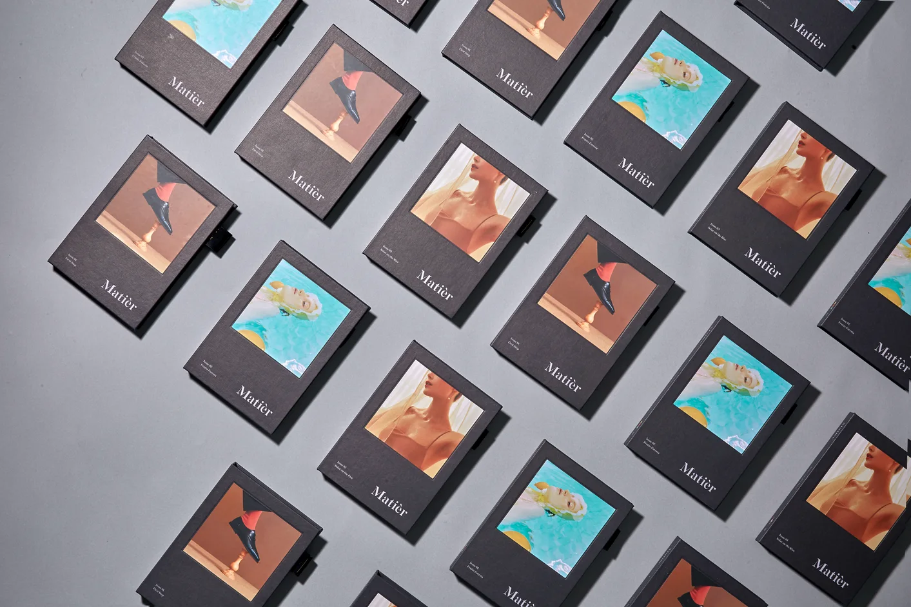
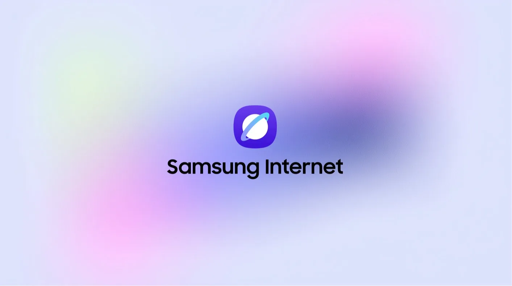
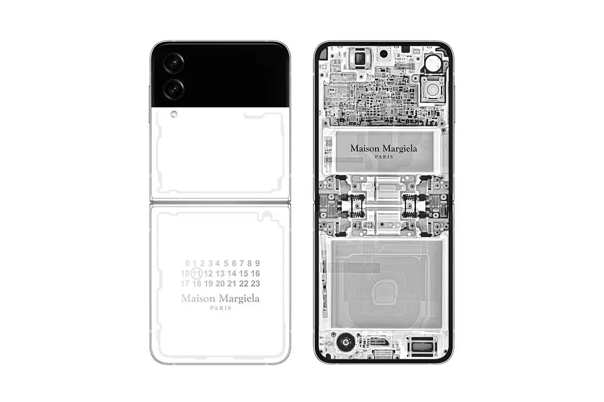
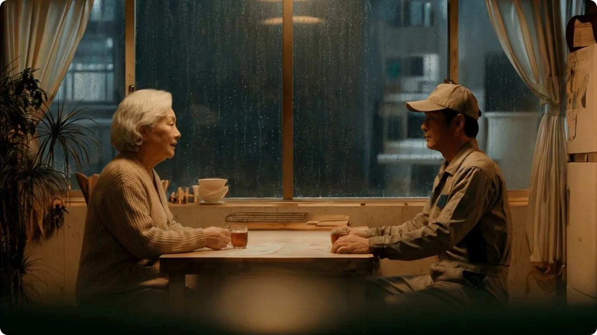
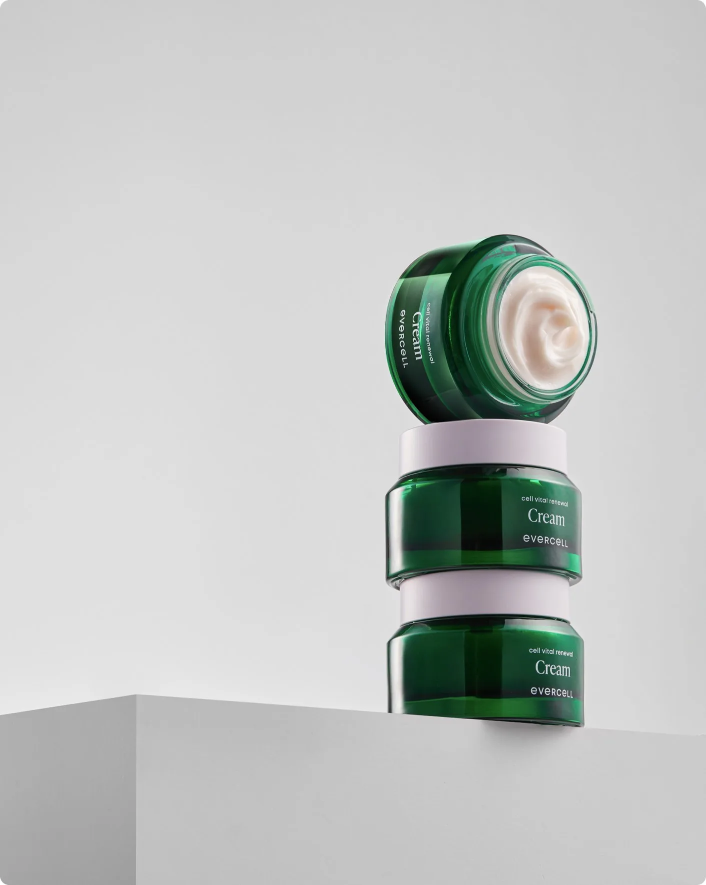
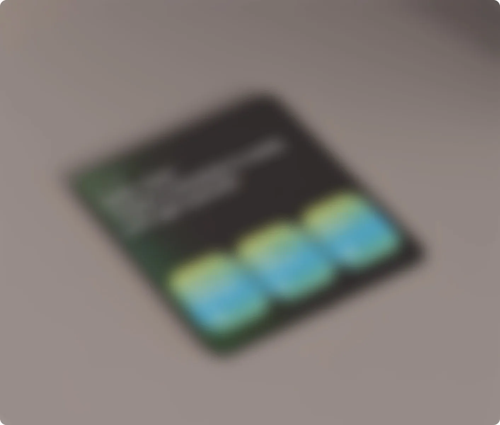

Hanwha Life
Hanwha E-sports 2026 Asian Games
경기도농업기술원
Gyeong-gi 4-H Club Campaign Film
Samsung
Developer Platform Renewal Project
CJ
CJ Milano Winter Olympics Campaign
SLBS Studio x Samsung Gangnam Film

Matièr
Product & Brand Film Production

Samsung Internet Website Renewal
SmartThings 2D Motion Project
JYP Entertainment
Stray Kids Pop-up Content Production
Generative AI Image Sample Project
SHINSEGAE
Shinsegae Duty Free Content Production

Samsung × Maison Margiela
Galaxy Z Flip4 Maison Margiela Edition

AI Film
Last Delivery AI Film Project
DFS
haruharu Product Production

evercell
evercell Product Photography Campaign

Fluidic Project